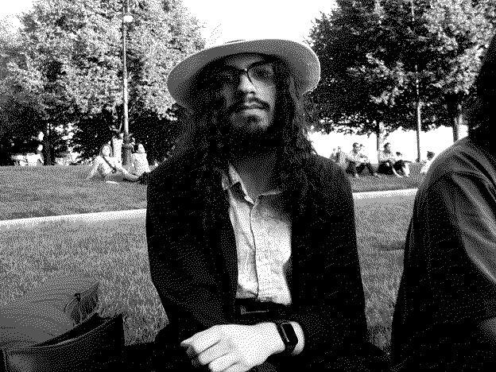

Hello. I’m Julian, an 18-year-old student learning about the world from the purlieus of Lynn, Massachusetts. This website is where I write about what I learn and what I like.

I’m primarily interested in human and political geography; the ways that different environments affect our lives, our relationships, and our power structures. By observing the woes of our surroundings, we can learn how to bring people together again.